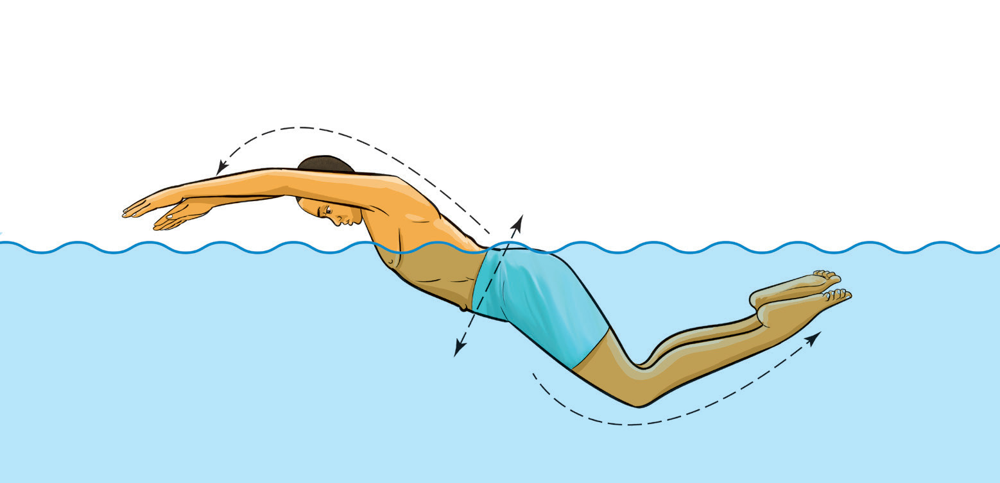

Proper timing is crucial to avoid disrupting the stroke’s rhythm. Many swimmers breathe every stroke cycle or every two cycles, depending on their endurance.
The butterfly stroke relies on a continuous wave-like motion that flows through the entire body. Swimmers must coordinate arm movements, leg kicks and breathing to maintain speed and efficiency, Figure 3.22. A streamlined body position helps reduce drag and enhances momentum.

Swimming races
Swimming competitions are organised in different distances, strokes and formats. Based on strokes, the races include freestyle, backstroke, breaststroke, butterfly and medley.
Freestyle swimming race
Freestyle refers to a swimming race where swimmers are allowed to use any stroke they prefer. However, in most freestyle swimming events, swimmers use front crawl, consequently, front crawl is sometimes misconceived as freestyle stroke. Below are key rules governing freestyle swimming race: